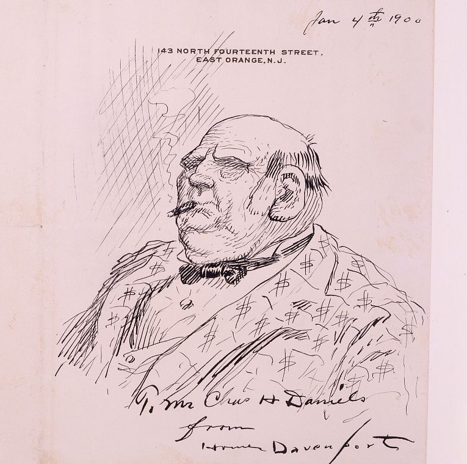

<template id="scene-01-cold-open-template">
  <div data-composition-id="scene-01-cold-open" data-width="1920" data-height="1080" style="position:absolute; top:0; left:0; width:1920px; height:1080px; overflow:hidden; background-color:#0E0B08;">
    <style>
      @font-face {
        font-family: "Source Serif 4";
        src: url("../assets/fonts/SourceSerif4-Regular.woff2") format("woff2");
        font-weight: 400; font-style: normal;
      }
      @font-face {
        font-family: "Playfair Display";
        src: url("../assets/fonts/PlayfairDisplay-Bold.woff2") format("woff2");
        font-weight: 700; font-style: normal;
      }
      @font-face {
        font-family: "Playfair Display";
        src: url("../assets/fonts/PlayfairDisplay-Black.woff2") format("woff2");
        font-weight: 900; font-style: normal;
      }
      @font-face {
        font-family: "Roboto Mono";
        src: url("../assets/fonts/RobotoMono-Regular.woff2") format("woff2");
        font-weight: 400 700; font-style: normal;
      }
      .s1-stage {
        position: absolute; inset: 0;
        background-color: #0E0B08;
        font-family: "Source Serif 4", serif;
        color: #E8DEC8;
        overflow: hidden;
      }

      /* ─── HEADLINE STRIP ─── */
      #s1-headline {
        position: absolute; top: 92px; left: 96px;
        width: 1728px;
        font-family: "Roboto Mono", "Courier New", monospace;
        font-size: 22px; font-weight: 500;
        color: #9A8E76;
        letter-spacing: 0.18em;
        text-transform: uppercase;
        opacity: 0; z-index: 10;
        border-top: 1px solid #C87533;
        border-bottom: 1px solid #C87533;
        padding: 14px 0;
        text-align: center;
      }

      /* ─── DAVENPORT CARTOON ─── */
      #s1-cartoon {
        position: absolute;
        top: 56%; left: 50%;
        width: 640px; max-height: 720px; height: auto;
        opacity: 0; z-index: 5;
        filter: sepia(0.25) contrast(1.05) brightness(0.92) saturate(0.85);
        box-shadow: 0 30px 80px rgba(0,0,0,0.65);
        border: 1px solid #C87533;
      }
      #s1-spotlight {
        position: absolute; inset: 0;
        background: radial-gradient(ellipse 600px 500px at center, rgba(200,117,51,0.18) 0%, rgba(14,11,8,0) 60%);
        z-index: 4; opacity: 0; pointer-events: none;
      }

      /* ─── NAME REVEAL ─── */
      #s1-name {
        position: absolute; top: 230px; left: 0;
        width: 100%; text-align: center;
        font-family: "Playfair Display", serif;
        font-weight: 900; font-size: 184px;
        line-height: 0.95; letter-spacing: -0.03em;
        color: #E8DEC8; opacity: 0;
        z-index: 11;
        text-shadow: 0 4px 20px rgba(0,0,0,0.5);
      }
      #s1-name .first { display: inline-block; opacity: 0; transform: translateY(40px); }
      #s1-name .last  { display: inline-block; opacity: 0; transform: translateY(40px); color: #C87533; }

      /* ─── INDICTMENT ─── */
      #s1-indictment {
        position: absolute; top: 470px; left: 96px;
        width: 1728px; text-align: center;
        font-family: "Playfair Display", serif;
        font-weight: 700; font-size: 56px;
        line-height: 1.25; color: #E8DEC8;
        opacity: 0; z-index: 11;
      }
      #s1-indictment .accent { color: #C87533; font-style: italic; }

      /* ─── BIO STAMP ─── */
      #s1-bio {
        position: absolute; top: 480px; left: 96px;
        width: 1728px; text-align: center;
        font-family: "Source Serif 4", serif;
        font-size: 44px; line-height: 1.3;
        color: #E8DEC8; opacity: 0; z-index: 11;
      }
      #s1-bio .accent { color: #C87533; font-weight: 700; }
      #s1-bio .sub {
        margin-top: 20px;
        font-family: "Roboto Mono", monospace;
        font-size: 22px; letter-spacing: 0.2em;
        color: #9A8E76; text-transform: uppercase;
      }

      /* ─── THESIS LINE ─── */
      #s1-thesis {
        position: absolute; top: 380px; left: 96px;
        width: 1728px; text-align: center;
        font-family: "Playfair Display", serif;
        font-weight: 900; font-size: 84px;
        line-height: 1.15; letter-spacing: -0.02em;
        color: #E8DEC8; opacity: 0; z-index: 11;
      }
      #s1-thesis .accent { color: #C87533; font-style: italic; }

      /* ─── NUMBERS SCOREBOARD ─── */
      #s1-numbers-stage {
        position: absolute; top: 280px; left: 96px; right: 96px;
        height: 540px;
        display: grid;
        grid-template-columns: repeat(3, 1fr);
        align-items: center;
        gap: 50px;
        z-index: 12; opacity: 0;
      }
      .s1-num {
        opacity: 0; text-align: center;
        padding: 36px 16px;
        border-top: 2px solid #C87533;
        border-bottom: 1px solid #9A8E76;
        background: rgba(232, 222, 200, 0.02);
      }
      .s1-num .label {
        font-family: "Roboto Mono", monospace;
        font-size: 24px; letter-spacing: 0.2em;
        text-transform: uppercase; color: #9A8E76;
        margin-bottom: 18px;
        min-height: 2.6em; line-height: 1.3;
        display: flex; align-items: flex-end; justify-content: center;
      }
      .s1-num .value {
        font-family: "Playfair Display", serif;
        font-weight: 900; font-size: 96px; line-height: 1;
        color: #E8DEC8; margin-bottom: 14px;
        font-variant-numeric: tabular-nums;
      }
      .s1-num .value.amber { color: #C87533; }
      .s1-num .value.blood { color: #C03A2C; }
      .s1-num .sub {
        font-family: "Source Serif 4", serif;
        font-size: 22px; color: #E8DEC8;
        font-style: italic; line-height: 1.3;
      }

      /* ─── DONOR LEDGER (Standard Oil, Carnegie, Banks) ─── */
      #s1-ledger {
        position: absolute; top: 320px; left: 96px;
        width: 1728px;
        z-index: 12; opacity: 0;
      }
      .s1-ledger-row {
        display: grid;
        grid-template-columns: 1fr auto;
        align-items: baseline;
        padding: 22px 40px;
        border-bottom: 1px solid #3A2E20;
        opacity: 0;
      }
      .s1-ledger-row .who {
        font-family: "Playfair Display", serif;
        font-weight: 700; font-size: 64px;
        color: #E8DEC8; letter-spacing: -0.01em;
      }
      .s1-ledger-row .order {
        font-family: "Roboto Mono", monospace;
        font-size: 28px; letter-spacing: 0.2em;
        color: #C87533; text-transform: uppercase;
      }
      .s1-ledger-cap {
        margin-top: 36px; text-align: center;
        font-family: "Source Serif 4", serif;
        font-style: italic; font-size: 36px;
        color: #9A8E76; opacity: 0;
      }

      /* ─── STAKES STACK: "Banks paid. Railroads paid. ... Manhattan office." (39–44s) ─── */
      #s1-stakes {
        position: absolute; top: 280px; left: 96px;
        width: 1728px; height: 540px;
        display: flex; flex-direction: column;
        align-items: center; justify-content: center;
        gap: 24px;
        z-index: 12; opacity: 0;
      }
      .s1-stake {
        opacity: 0;
        font-family: "Playfair Display", serif;
        font-weight: 900;
        font-size: 88px;
        letter-spacing: -0.02em;
        color: #E8DEC8;
        text-align: center;
      }
      .s1-stake .verb {
        color: #C87533;
        font-style: italic;
        font-weight: 700;
      }
      .s1-stake.locale {
        font-size: 44px;
        font-style: italic;
        color: #9A8E76;
        font-family: "Source Serif 4", serif;
        font-weight: 400;
        margin-top: 16px;
      }

      /* ─── PUNCH: "It was bought." ─── */
      #s1-punch {
        position: absolute; top: 0; left: 0;
        width: 100%; height: 100%;
        display: flex; align-items: center; justify-content: center;
        font-family: "Playfair Display", serif;
        font-weight: 900; font-size: 220px;
        letter-spacing: -0.03em;
        color: #C03A2C;
        opacity: 0; z-index: 14;
      }

      /* ─── META LINE ("This is the man nobody remembers") ─── */
      #s1-meta {
        position: absolute; top: 280px; left: 96px;
        width: 1728px; text-align: center;
        font-family: "Playfair Display", serif;
        font-weight: 900; font-size: 96px;
        line-height: 1.15; letter-spacing: -0.02em;
        color: #E8DEC8; opacity: 0; z-index: 11;
      }
      #s1-meta .line1 {
        display: block;
        opacity: 0;
      }
      #s1-meta .line2 {
        display: block;
        margin-top: 28px;
        color: #C87533;
        opacity: 0;
      }

      /* ─── VIEW-COUNT CONTRAST ─── */
      #s1-views {
        position: absolute; top: 240px; left: 96px;
        width: 1728px; height: 600px;
        display: grid;
        grid-template-columns: 1fr 1fr;
        align-items: center;
        gap: 80px;
        z-index: 12; opacity: 0;
      }
      .s1-view {
        text-align: center;
        opacity: 0;
        padding: 40px 30px;
      }
      .s1-view .who {
        font-family: "Roboto Mono", monospace;
        font-size: 24px; letter-spacing: 0.25em;
        color: #9A8E76; text-transform: uppercase;
        margin-bottom: 28px;
      }
      .s1-view .count {
        font-family: "Playfair Display", serif;
        font-weight: 900; font-size: 168px; line-height: 1;
        font-variant-numeric: tabular-nums;
        margin-bottom: 18px;
      }
      .s1-view.hanna .count { color: #9A8E76; }
      .s1-view.tr    .count { color: #E8DEC8; }
      .s1-view .what {
        font-family: "Source Serif 4", serif;
        font-style: italic; font-size: 28px;
        color: #9A8E76;
      }

      /* ─── THESIS QUESTIONS (close of cold open) ─── */
      #s1-q1, #s1-q2 {
        position: absolute; left: 96px;
        width: 1728px; text-align: center;
        font-family: "Playfair Display", serif;
        font-weight: 700; font-size: 72px;
        line-height: 1.25; letter-spacing: -0.015em;
        color: #E8DEC8; opacity: 0; z-index: 13;
      }
      #s1-q1 { top: 380px; }
      #s1-q2 { top: 580px; color: #C87533; }
    </style>

    <div class="s1-stage">
      <!-- Newsprint header strip -->
      <div id="s1-headline">A Campaign Manager &#160;·&#160; Cleveland, Ohio &#160;·&#160; 1896</div>

      <!-- Spotlight glow -->
      <div id="s1-spotlight"></div>

      <!-- The Davenport cartoon -->
      

      <!-- The name -->
      <div id="s1-name">
        <span class="first">MARK</span>&#160;<span class="last">HANNA</span>
      </div>

      <!-- Indictment: "He built the machine that bought American elections" -->
      <div id="s1-indictment">
        He built the <span class="accent">machine</span><br>
        that bought American elections.
      </div>

      <!-- Bio stamp: Cleveland iron-and-coal millionaire, 59, never ran -->
      <div id="s1-bio">
        Cleveland iron-and-coal <span class="accent">millionaire</span>.<br>
        59 years old.<br>
        <div class="sub">Had never run for office in his life.</div>
      </div>

      <!-- Thesis line: industrial-scale corporate money -->
      <div id="s1-thesis">
        The first campaign bought<br>
        with corporate money<br>
        at <span class="accent">industrial scale.</span>
      </div>

      <!-- Numbers scoreboard: $3.5M / 20× / McKinley elected -->
      <div id="s1-numbers-stage">
        <div class="s1-num" id="s1-n1">
          <div class="label">Raised</div>
          <div class="value amber">$3,500,000</div>
          <div class="sub">in 1896 dollars</div>
        </div>
        <div class="s1-num" id="s1-n2">
          <div class="label">Outspent His Opponent</div>
          <div class="value blood">20 ×</div>
          <div class="sub">over Bryan's campaign</div>
        </div>
        <div class="s1-num" id="s1-n3">
          <div class="label">Elected</div>
          <div class="value amber">McKinley</div>
          <div class="sub">25th President</div>
        </div>
      </div>

      <!-- Donor ledger: Standard Oil / Carnegie / Banks -->
      <div id="s1-ledger">
        <div class="s1-ledger-row" data-row="1"><div class="who">Standard Oil</div><div class="order">paid first</div></div>
        <div class="s1-ledger-row" data-row="2"><div class="who">Carnegie Steel</div><div class="order">paid second</div></div>
        <div class="s1-ledger-row" data-row="3"><div class="who">Banks &amp; Insurance</div><div class="order">paid by capital</div></div>
        <div class="s1-ledger-cap">Hanna did not ask. He sent letters telling firms what they owed.</div>
      </div>

      <!-- Stakes stack (39–44s): "Banks paid. Railroads paid. Manhattan office." -->
      <div id="s1-stakes">
        <div class="s1-stake" data-stake="1">Banks <span class="verb">paid.</span></div>
        <div class="s1-stake" data-stake="2">Railroads <span class="verb">paid.</span></div>
        <div class="s1-stake locale" data-stake="3">From a rented Manhattan office.</div>
      </div>

      <!-- Punch: "It was bought." -->
      <div id="s1-punch">It was bought.</div>

      <!-- Meta line: "This is the man who built ... nobody remembers" -->
      <div id="s1-meta">
        <span class="line1">The man who built the operating system of American elections.</span>
        <span class="line2">The man nobody remembers.</span>
      </div>

      <!-- View-count contrast -->
      <div id="s1-views">
        <div class="s1-view hanna">
          <div class="who">Mark Hanna · Wikipedia</div>
          <div class="count">6,000</div>
          <div class="what">monthly views</div>
        </div>
        <div class="s1-view tr">
          <div class="who">Theodore Roosevelt · Wikipedia</div>
          <div class="count">300,000</div>
          <div class="what">monthly views</div>
        </div>
      </div>

      <!-- Closing thesis questions -->
      <div id="s1-q1">How one man bought a presidency.</div>
      <div id="s1-q2">How the country he built forgot his name.</div>
    </div>

    <script>
      window.__timelines = window.__timelines || {};
      const tl = gsap.timeline({ paused: true });

      // ═════════════════════════════════════════════════════════════════
      // BEAT MAP — section 01 cold open (94.23s) — verified vs whisper
      // ═════════════════════════════════════════════════════════════════
      //  0.03  "The cartoon ran in every Hearst paper"   — CARTOON ESTABLISH
      //  2.46  "in eighteen ninety-six"                  — YEAR
      //  3.4   "A fat man in a suit covered in dollar signs" — DESCRIPTIONS (hold)
      // 10.9   "The man did not."                        — TENSION
      // 12.0   "His name was"                            — NAME PREP
      // 12.70  "Mark Hanna" (whisper: "Hannah")          — NAME LANDS
      // 13.35  "He built the machine that bought"        — INDICTMENT
      // 16.28  "Mark Hanna was a Cleveland iron-and-coal millionaire" — BIO
      // 18.16  "millionaire."                            — BIO accent
      // 23.25  "first campaign bought with corporate money at industrial scale" — THESIS
      // 27.38  "three" (and a half million)              — $ SCOREBOARD
      // 28.06  "million dollars"                         — $3.5M lands
      // 30.51  "20 times what his opponents spent"       — 20× lands
      // 32.46  "elected William McKinley"                — McKinley lands
      // 39.04  "Banks paid."                             — STAKES STACK begins
      // 44.0   gap before "It was bought."               — silence punch
      // 45.40  "Standard Oil paid first"                 — DONOR LEDGER row 1
      // 47.5   "Carnegie Steel paid second"              — row 2
      // 49.5   "Banks and insurance"                     — row 3
      // 55.5   "He sent letters telling firms what they owed" — ledger caption
      // 62.32  "Every campaign after... copied his playbook"
      // 65.87  "This is the man who built the operating system" — META line 1
      // 69.75  "This is the man nobody remembers."       — META line 2 (KEY LINE)
      // 81.41  "Wikipedia... 6,000 views/month"          — VIEW-COUNT 1
      // 86.50  "Theodore Roosevelt's averages over 300,000" — VIEW-COUNT 2
      // 89.87  "How one man bought a presidency"         — Q1
      // 93.27  "How the country he built forgot his name" — Q2 (CLOSE)
      // ═════════════════════════════════════════════════════════════════

      // ─── Phase 1: CARTOON + HEADLINE (0–11s) ───────────────────────
      tl.to("#s1-headline", { opacity: 1, duration: 0.8, ease: "power3.out" }, 0.25);

      tl.fromTo("#s1-cartoon",
        { opacity: 0, xPercent: -50, yPercent: -50, scale: 1, y: -65 },
        { opacity: 1, xPercent: -50, yPercent: -50, scale: 1, y: -65, duration: 1.2, ease: "power3.out" },
        0.5
      );
      tl.to("#s1-spotlight", { opacity: 1, duration: 1.5, ease: "sine.inOut" }, 0.5);

      // Slow ken-burns (1.0 → 1.06 over 10s; subtle, documentary)
      tl.to("#s1-cartoon", { scale: 1.06, duration: 10, ease: "none", overwrite: "auto" }, 1.5);

      // Exit cartoon at 10.5s — clear for name
      tl.to(["#s1-cartoon", "#s1-spotlight"], {
        opacity: 0, scale: 1.12, duration: 0.8, ease: "power2.in"
      }, 10.4);
      tl.to("#s1-headline", { opacity: 0, duration: 0.6, ease: "power2.in" }, 10.5);

      // ─── Phase 2: NAME REVEAL (12.0–16s) ──────────────────────────
      tl.set("#s1-name", { opacity: 1 }, 11.9);
      tl.to("#s1-name .first", { opacity: 1, y: 0, duration: 0.6, ease: "power3.out" }, 12.0);
      tl.to("#s1-name .last",  { opacity: 1, y: 0, duration: 0.6, ease: "power3.out" }, 12.6);

      // Hold the name through "He built the machine" — exit before bio
      tl.to("#s1-name", { opacity: 0, duration: 0.6, ease: "power2.in" }, 15.2);
      tl.set("#s1-name", { visibility: "hidden" }, 15.85);

      // ─── Phase 3: INDICTMENT (13.35–16s) ──────────────────────────
      tl.fromTo("#s1-indictment",
        { opacity: 0, y: 30 },
        { opacity: 1, y: 0, duration: 0.9, ease: "power3.out" },
        13.35
      );
      tl.to("#s1-indictment", { opacity: 0, duration: 0.6, ease: "power2.in" }, 15.6);
      tl.set("#s1-indictment", { visibility: "hidden" }, 16.25);

      // ─── Phase 4: BIO STAMP (16.3–22s) ────────────────────────────
      tl.fromTo("#s1-bio",
        { opacity: 0, y: 24 },
        { opacity: 1, y: 0, duration: 0.8, ease: "power3.out" },
        16.3
      );
      tl.to("#s1-bio", { opacity: 0, duration: 0.6, ease: "power2.in" }, 22.0);
      tl.set("#s1-bio", { visibility: "hidden" }, 22.65);

      // ─── Phase 5: THESIS LINE (23.25–27s) ─────────────────────────
      tl.fromTo("#s1-thesis",
        { opacity: 0, y: 30 },
        { opacity: 1, y: 0, duration: 0.9, ease: "power3.out" },
        23.0
      );
      tl.to("#s1-thesis .accent", { color: "#C03A2C", duration: 0.4, ease: "power2.in" }, 25.5);
      tl.to("#s1-thesis", { opacity: 0, duration: 0.5, ease: "power2.in" }, 26.7);
      tl.set("#s1-thesis", { visibility: "hidden" }, 27.25);

      // ─── Phase 6: NUMBERS SCOREBOARD (27.4–38s) ───────────────────
      // Stage starts hidden; cards appear via fromTo on .s1-num — no parent opacity needed
      tl.set("#s1-numbers-stage", { opacity: 1, visibility: "visible" }, 27.3);

      // $3.5M lands on "three and a half million dollars" (27.38)
      tl.fromTo("#s1-n1",
        { opacity: 0, y: 30 },
        { opacity: 1, y: 0, duration: 0.7, ease: "power3.out" },
        27.4
      );
      // 20× lands on "20 times what his opponents spent" (30.51)
      tl.fromTo("#s1-n2",
        { opacity: 0, y: 30 },
        { opacity: 1, y: 0, duration: 0.7, ease: "power3.out" },
        30.4
      );
      // McKinley lands on "elected William McKinley" (32.46)
      tl.fromTo("#s1-n3",
        { opacity: 0, y: 30 },
        { opacity: 1, y: 0, duration: 0.7, ease: "power3.out" },
        32.3
      );

      tl.to("#s1-numbers-stage", { opacity: 0, duration: 0.6, ease: "power2.in" }, 38.2);
      tl.set("#s1-numbers-stage", { visibility: "hidden" }, 38.85);

      // ─── Phase 6b: STAKES STACK (39–44s) — "Banks paid. Railroads paid. Manhattan office." ───
      tl.set("#s1-stakes", { opacity: 1, visibility: "visible" }, 38.9);

      // "Banks paid." (39.04)
      tl.fromTo('.s1-stake[data-stake="1"]',
        { opacity: 0, x: -30 },
        { opacity: 1, x: 0, duration: 0.5, ease: "power3.out" },
        38.95
      );
      // "Railroads paid." (39.85)
      tl.fromTo('.s1-stake[data-stake="2"]',
        { opacity: 0, x: -30 },
        { opacity: 1, x: 0, duration: 0.5, ease: "power3.out" },
        39.75
      );
      // "From a rented Manhattan office." (43.31)
      tl.fromTo('.s1-stake[data-stake="3"]',
        { opacity: 0, y: 20 },
        { opacity: 1, y: 0, duration: 0.7, ease: "power3.out" },
        42.9
      );

      // Exit just before "It was bought." punch
      tl.to("#s1-stakes", { opacity: 0, duration: 0.3, ease: "power2.in" }, 44.2);
      tl.set("#s1-stakes", { visibility: "hidden" }, 44.5);

      // ─── Phase 6c: PUNCH "It was bought." (44.47) — full-frame slam ───
      tl.fromTo("#s1-punch",
        { opacity: 0, scale: 0.85 },
        { opacity: 1, scale: 1, duration: 0.4, ease: "expo.out" },
        44.4
      );
      // Hold for ~0.8s, then exit before donor ledger
      tl.to("#s1-punch", { opacity: 0, scale: 1.05, duration: 0.5, ease: "power2.in" }, 45.0);
      tl.set("#s1-punch", { visibility: "hidden" }, 45.5);

      // ─── Phase 7: DONOR LEDGER (45.4–65s) — Standard Oil / Carnegie / Banks ───
      // Activate AFTER the punch exits at 45.5s
      tl.set("#s1-ledger", { opacity: 1, visibility: "visible" }, 45.5);

      // Row 1: "Standard Oil paid first" lands at 45.40
      tl.fromTo('.s1-ledger-row[data-row="1"]',
        { opacity: 0, x: -30 },
        { opacity: 1, x: 0, duration: 0.6, ease: "power3.out" },
        45.3
      );
      // Row 2: "Carnegie Steel paid second" lands at 47.5
      tl.fromTo('.s1-ledger-row[data-row="2"]',
        { opacity: 0, x: -30 },
        { opacity: 1, x: 0, duration: 0.6, ease: "power3.out" },
        47.4
      );
      // Row 3: "Banks and insurance" lands at 49.5
      tl.fromTo('.s1-ledger-row[data-row="3"]',
        { opacity: 0, x: -30 },
        { opacity: 1, x: 0, duration: 0.6, ease: "power3.out" },
        49.4
      );
      // Caption: "He sent letters telling firms what they owed" lands at 55.5
      tl.fromTo('.s1-ledger-cap',
        { opacity: 0, y: 16 },
        { opacity: 1, y: 0, duration: 0.7, ease: "power3.out" },
        55.0
      );

      tl.to("#s1-ledger", { opacity: 0, duration: 0.6, ease: "power2.in" }, 64.5);
      tl.set("#s1-ledger", { visibility: "hidden" }, 65.15);

      // ─── Phase 8: META LINE (65.87–72s) — staggered: line1 → line2 ─────
      tl.set("#s1-meta", { opacity: 1, visibility: "visible" }, 65.4);

      // Line 1: "The man who built the operating system of American elections" (65.87)
      tl.fromTo("#s1-meta .line1",
        { opacity: 0, y: 24 },
        { opacity: 1, y: 0, duration: 0.9, ease: "power3.out" },
        65.5
      );
      // Line 2: "The man nobody remembers." (69.75) — KEY LINE landing
      tl.fromTo("#s1-meta .line2",
        { opacity: 0, y: 20 },
        { opacity: 1, y: 0, duration: 0.9, ease: "power3.out" },
        69.5
      );

      // Hold across "Eight years later he was dead" — exit before view-count
      tl.to("#s1-meta", { opacity: 0, duration: 0.7, ease: "power2.in" }, 79.5);
      tl.set("#s1-meta", { visibility: "hidden" }, 80.25);

      // ─── Phase 9: VIEW-COUNT CONTRAST (81.41–89s) ─────────────────
      tl.set("#s1-views", { opacity: 1 }, 81.0);

      // Hanna 6,000 lands at "Wikipedia article averages around 6,000" (81.41)
      tl.fromTo(".s1-view.hanna",
        { opacity: 0, y: 24 },
        { opacity: 1, y: 0, duration: 0.7, ease: "power3.out" },
        81.0
      );
      // Roosevelt 300,000 lands at 86.50
      tl.fromTo(".s1-view.tr",
        { opacity: 0, y: 24 },
        { opacity: 1, y: 0, duration: 0.7, ease: "power3.out" },
        86.4
      );

      tl.to("#s1-views", { opacity: 0, duration: 0.5, ease: "power2.in" }, 89.4);
      tl.set("#s1-views", { visibility: "hidden" }, 89.95);

      // ─── Phase 10: THESIS QUESTIONS (89.87–94.2s) — CLOSE ─────────
      tl.fromTo("#s1-q1",
        { opacity: 0, y: 24 },
        { opacity: 1, y: 0, duration: 0.7, ease: "power3.out" },
        89.7
      );
      tl.fromTo("#s1-q2",
        { opacity: 0, y: 24 },
        { opacity: 1, y: 0, duration: 0.8, ease: "power3.out" },
        93.0
      );
      // Hold both questions to scene end (94.23s) — fade-out belongs to crossfade transition

      window.__timelines["scene-01-cold-open"] = tl;
    </script>
  </div>
</template>
